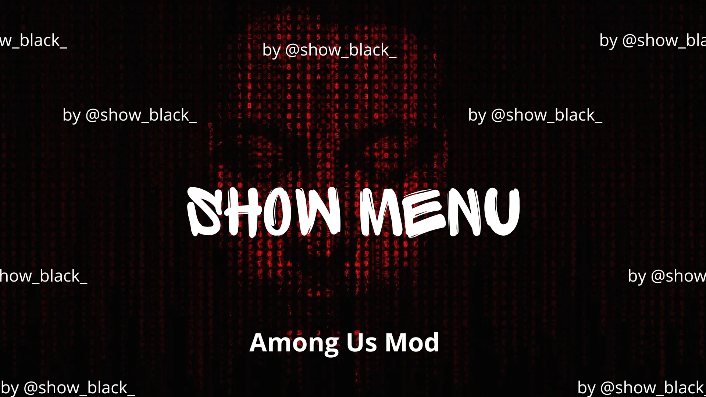

🛠 Features
- Reveal impostors & ghosts in real time
- Teleportation, role swapping, and multi-kill options
- Unlock all cosmetics (pets, skins, hats)
- Bypass bans and game protections
- Player tracking via minimap overlay

📦 Installation
- Download the ZIP file below
- Extract it into your Among Us game folder
- Launch the game and press DELETE to open the menu
⬇ Download ShowMenu Mod
👤 About
This mod was developed by @showblack9 to enhance gameplay with additional freedom and features. It is open source and licensed as provided in the GitHub repository.